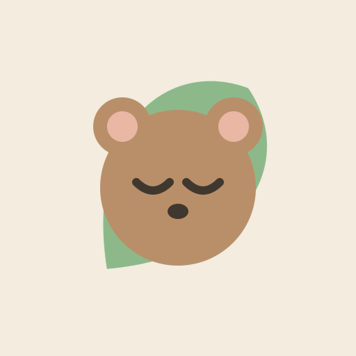

Dormice
Privacy policy
Dormice collects no data at all. There are no accounts, no ads, no analytics and no tracking, and nothing is shared with anyone.
Your progress, records and settings are saved only on your own device. They never leave it, and deleting the app deletes them.
The Android app does not even have permission to use the internet. The two links in its About screen open in your own browser.
Questions: dirk@primbs.de
Dirk Primbs · Last updated 16 November 2026
Datenschutzerklärung
Dormice erhebt überhaupt keine Daten. Es gibt keine Konten, keine Werbung, keine Statistik und kein Tracking, und nichts wird an andere weitergegeben.
Dein Fortschritt, deine Bestzeiten und Einstellungen werden nur auf deinem eigenen Gerät gespeichert. Sie verlassen es nie, und wenn du die App löschst, sind sie weg.
Die Android-App hat nicht einmal die Berechtigung, das Internet zu nutzen. Die beiden Links im Info-Fenster öffnen sich in deinem eigenen Browser.
Fragen: dirk@primbs.de
Dirk Primbs · Stand: 16. November 2026
Politique de confidentialité
Dormice ne collecte aucune donnée. Pas de compte, pas de publicité, pas de statistiques, pas de pistage, et rien n’est transmis à qui que ce soit.
Ta progression, tes records et tes réglages sont enregistrés uniquement sur ton appareil. Ils ne le quittent jamais, et supprimer l’application les efface.
L’application Android n’a même pas l’autorisation d’utiliser Internet. Les deux liens de l’écran À propos s’ouvrent dans ton propre navigateur.
Questions : dirk@primbs.de
Dirk Primbs · Mise à jour : 16 novembre 2026